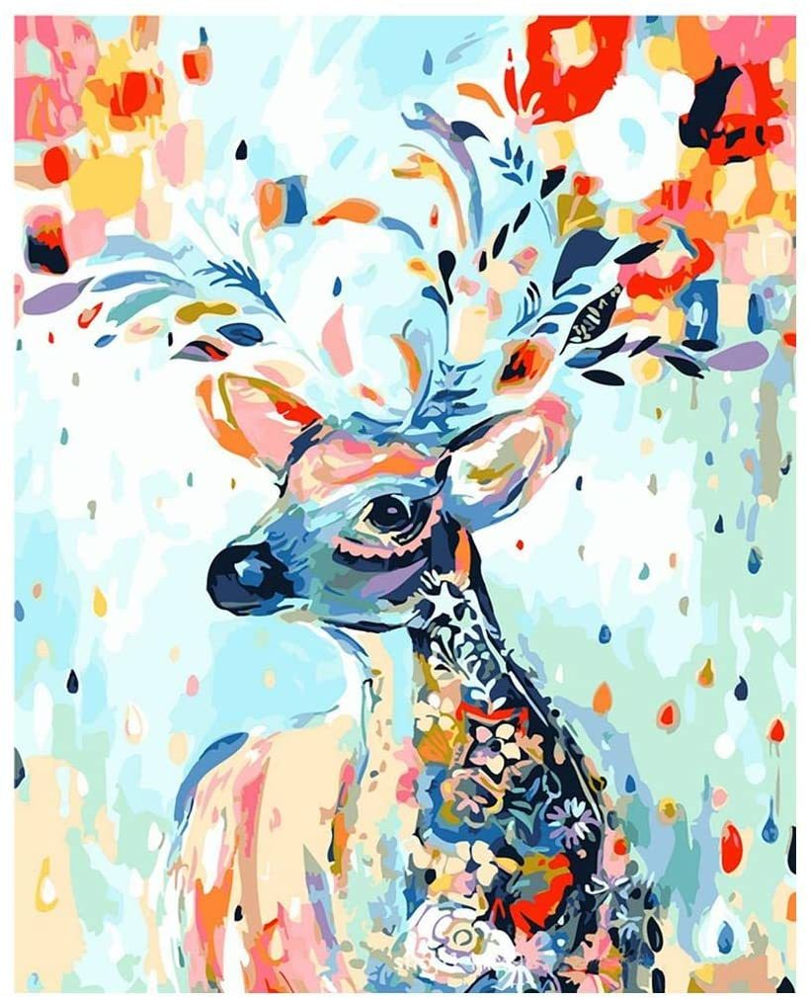
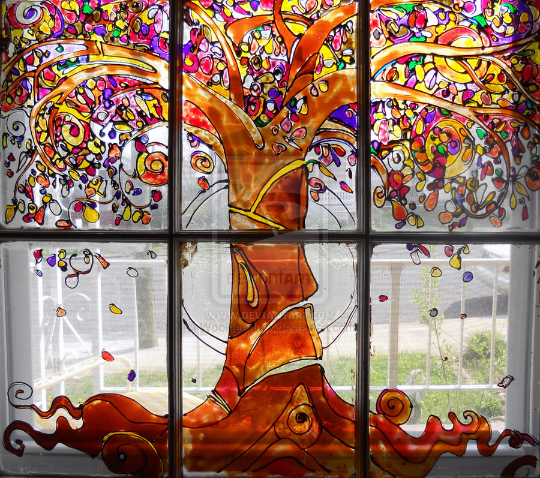

Types of drawing

drawing on canvas
Canvas has become the most common support medium for oil painting. It was used from the 14th century in Italy, but only rarely. One of the earliest surviving oils on canvas is a French Madonna with angels from around 1410 in the Gemäldegalerie, Berlin.Canvas is an extremely durable plain-woven fabric used for making sails, tents, marquees, backpacks, shelters, as a support for oil painting and for other items for which sturdiness is required,

drawing on glass
As a decorative and functional medium, glass was extensively developed in Egypt and Assyria. Glassblowing was perhaps invented in the 1st century BC, and featured heavily in Roman glass, which was highly developed. Reverse painting on glass is an art form consisting of applying paint to a piece of glass and then viewing the image by turning the glass over and looking through the glass at the image.

drawing on wood
Wood carving is one of the oldest arts of humankind.Wood carving is an important and long established traditional artifact industry. the oldest wood sculpture is Shigir Idol carved around 11,000 years ago a wood panel will not warp, or sag. The painting can be transported with less risk, and the paint is less likely to crack over time.

drawing by sand
Sand art is the practice of modelling sand into an artistic form.Sand sculpting is the oldest form of sculpting in the world. The history of sand sculpting dates back to prehistoric times.Andrew Clemensbecame famous for his craft of creating unfixed pictures using multicoloured sands compressed inside glass bottles or ornate chemist jars.